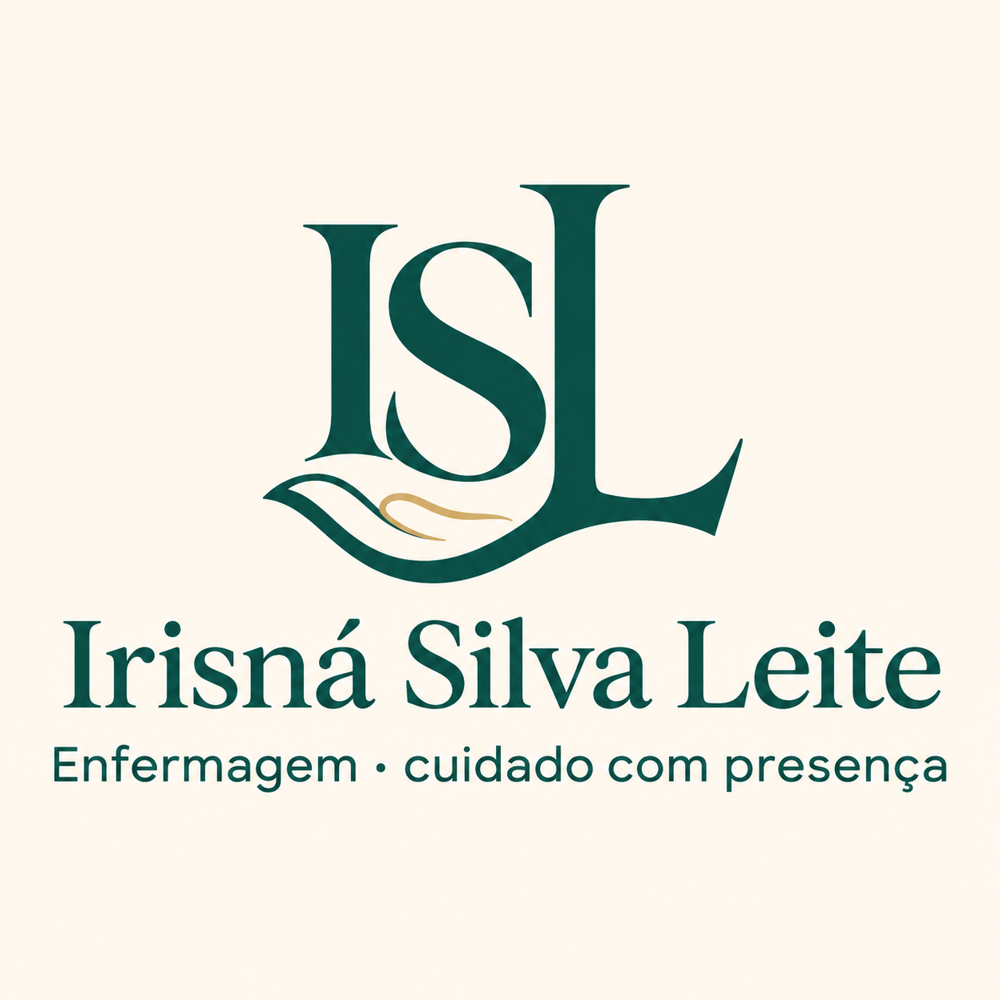
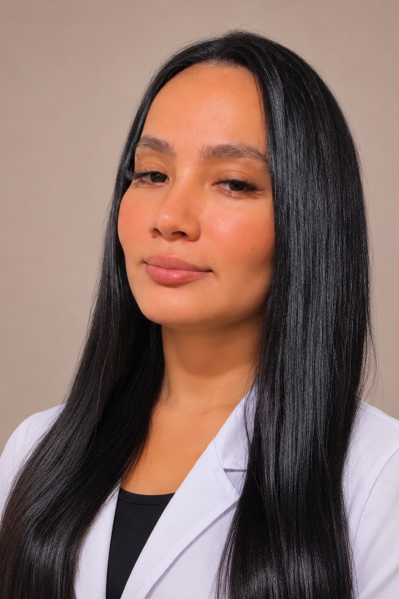
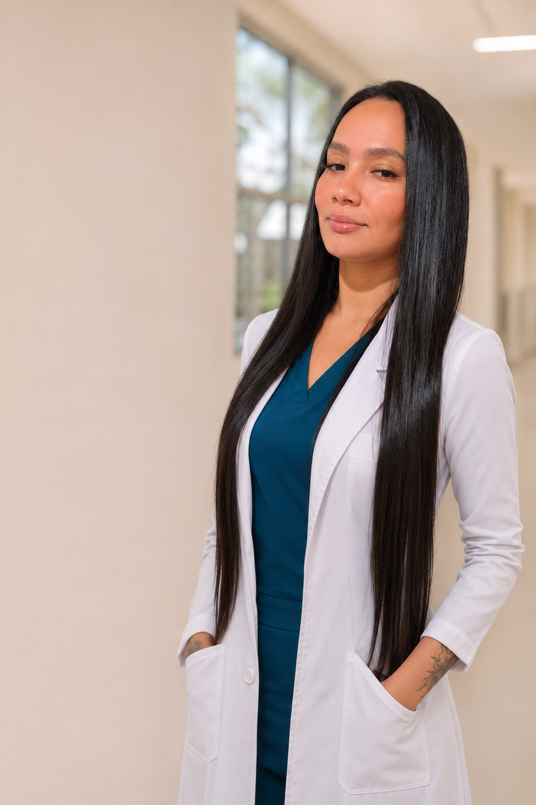

Hospital Municipal Zona Norte Doutor Nestor Piva
Emergência e Urgência
Técnica em Enfermagem
Observação
Técnica em Enfermagem

Profissional de enfermagem com experiência em urgência, emergência, observação e estabilização. Atendimento atento, humano e comprometido com a segurança do paciente.
Falar pelo WhatsApp
Técnica de enfermagem com atuação em urgência e emergência, observação e estabilização de pacientes críticos no Hospital Municipal Zona Norte Doutor Nestor Piva, onde foi premiada em 2026. Percebe cada detalhe do paciente e age com agilidade e segurança. Formação complementar em neurocirurgia, suporte básico de vida (BLS) e necropsia.

Técnica em Enfermagem
Técnica em Enfermagem
Técnica em Enfermagem